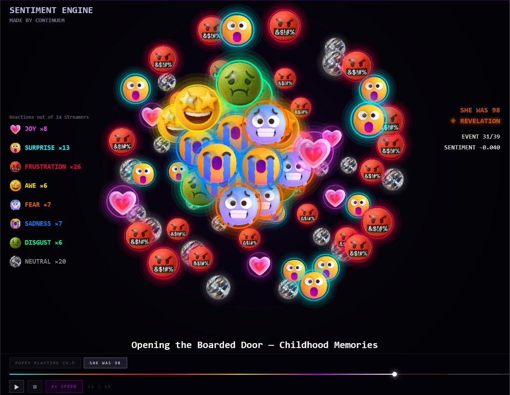

Tracking Gamer Reactions in Videos-On-Demand (VODS)

A 3D globe of floating bubbles, each representing an emotion detected in streamer commentary during gameplay. The globe animates through named game events — one at a time — showing how the emotional mix shifts as the game unfolds.
Each bubble's color maps to one of 8 emotions. The number of bubbles equals the proportion of streamers expressing that emotion at that moment — the left legend shows the live count (e.g., JOY ×12 = 12 of the 21 streamers registered joy keywords in that event). The top 4 emotions by intensity orbit the outer shell; the lower-ranked 4 float in the inner core.
Bottom-center shows the current named game event. Top-right shows the section label, event count (e.g., EVENT 14/57), and net sentiment score. Top-left lists live counts for all 8 emotions. Sentiment ranges roughly from −0.15 to +0.27, computed as (pos − neg) / (pos + neg + neu × 0.5) across all 30-second windows in that event.
The colored bar at the bottom maps the full game into sections — click anywhere to jump to a specific event. Play/Pause animates through all events; Stop resets to event 1; the Speed button cycles 0.5× → 4×. Drag to rotate the globe; scroll to zoom.
Tabs at the bottom switch between Poppy Playtime Ch.5 (21 streamers, 57 events) and She Was 98 (24 streamers, 39 events). PP5 is dominated by frustration and surprise throughout; She Was 98 shows a slower build of fear and unease.
Every video is sliced into 30-second windows. Each window is scored for sentiment and labeled with a dominant emotion, then grouped by named game event and aggregated across all creators. What you see is the combined emotional response of the full creator group — not any single person.
The x-axis lists every named game event in order; the y-axis lists the 8 emotion categories. Cell brightness = intensity. A 3-pixel cap at the top of a cell marks the single dominant emotion for that event.
One row per creator, one column per event. Each cell is colored by that creator's dominant emotion and shaded by strength of their mean score. Creator name and overall mean score appear to the left — green indicates net positive across the full game, red indicates net negative.
Re-sort events by Reactivity (highest non-neutral % first) or by Sentiment (most positive first). Clicking any cell opens a panel showing every creator's score, dominant emotion, window count, and raw transcript samples from that moment — direct, unedited quotes.
For each video, the system retrieves the spoken transcript. Where YouTube's auto-generated captions are available, those are pulled directly — no audio processing required. Where captions aren't available, the audio is downloaded and transcribed locally using OpenAI's Whisper model.
The result is a time-stamped transcript: every word a creator said, with its position in the video.
Each 30-second window is scored using a keyword lexicon. A sample lexicon covers eight emotion classes:
[Raw Captions JSON]
│
▼
1. Ingestion & Validation ──► Filters out sub-60s short-form filler content
│
▼
2. Temporal Windowing ──► Slices playback into uniform 30-second intervals
│
▼
3. Sentiment Vectoring ──► Keyword net-scoring mapped to range [-1.0, +1.0]
│
▼
4. Emotional Mapping ──► Plugs into an 8-class behavioral psychology lexicon
│
▼
5. Time Normalization ──► Translates absolute runtime to progress scale (0-100%)
│
▼
6. Cross-Bin Aggregation ──► Aligns all creator runs into 100 synchronized timeline bins
│
▼
7. Event Semantic Labeling ──► Maps specific bin clusters into 57 named game events
│
▼
8. Visualization Delivery ──► Injects production data into indexable, static dashboards
| Narrative Section | Progress Range | Primary Structural Focus |
|---|---|---|
| Opening | 0% — 7% | Narrative setup, cinematic intros, baseline world-building |
| Factory Puzzles | 7% — 25% | Core mechanic onboarding, spatial and logic puzzles |
| Huggy Chase | 25% — 38% | High-stress survival action sequence, pacing peak |
| Mid Puzzles | 38% — 67% | Extended progression, exploration, resource routing |
| Lily Dollhouse | 67% — 94% | Atmosphere shifts, environmental horror escalation |
| Prototype | 94% — 100% | Climax, boss encounter, reveal, and credit sequences |
POS_THRESH: > +0.15 → classified as positive
NEG_THRESH: < −0.15 → classified as negative
Neutral zone: [−0.15, +0.15] → classified as neutral
/outputs/ ├── 30s_sentiment_flat.csv # Raw log — 8,321 rows matching windows ├── 30s_sentiment_timeline.csv # Consolidated game arc timeline (100 bins) ├── 30s_sentiment_summary.csv # Profile stats for all 21 content creators ├── 30s_event_aggregates.csv # Analytical summaries for all 57 game events ├── 30s_heatmap.html # Embedded client-side interactive visualization └── data.json # Optimized static data asset for React
Collision example — the same words serve different emotional categories:
Taking the concept and research to the next level — some thoughts and further brainstorm.
While the current keyword framework provides rapid, low-overhead evaluations, Continuem has audited LLM providers to transition toward deep contextual analysis for weekly transcript batches (~80K tokens per run).
| Model | Cost / 1M Tokens | Context | Notes |
|---|---|---|---|
| Qwen-Plus | $0.12 | 1.0M | Selected Production Choice. Best-in-class financial efficiency (~$0.015/game/week). Native json_object mode via OpenAI-compatible SDK allows full single-call batch ingestion. |
| Gemini 2.5 Flash | $0.30 | 1.0M | Selected Enterprise Choice. Unmatched structural safety via native response_schema TypedDict enforcement. Mitigates parsing exceptions. |
| GPT-4o mini | $0.15 | 128K | Rejected — 2× cost vs. Gemini Flash without superior context windows. |
| Claude Sonnet 4.6 | $3.00 | 200K | Rejected — 20× price vs. Qwen for identical textual evaluation outputs. |
| Groq Llama 3.3 | $0.59 | 8K | Rejected — context floor too small for unified 80K token batches; requires complex window chunking. |